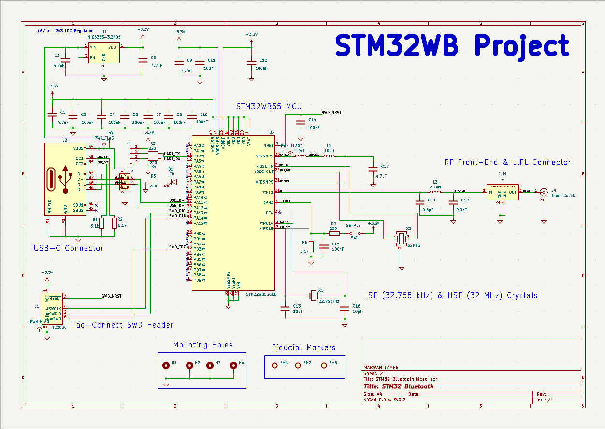
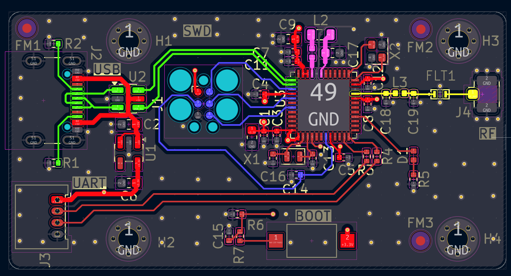
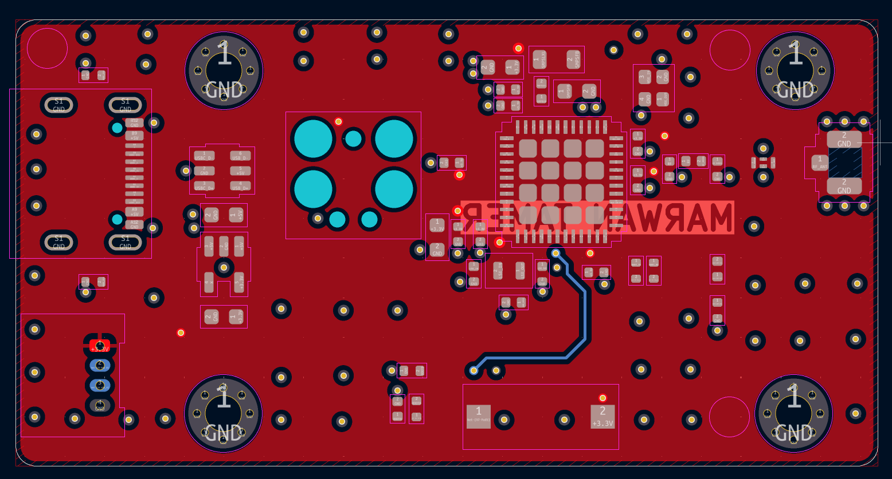
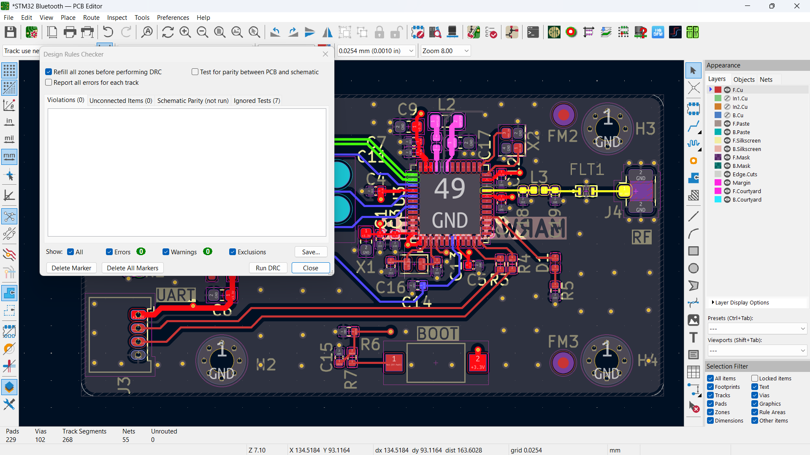
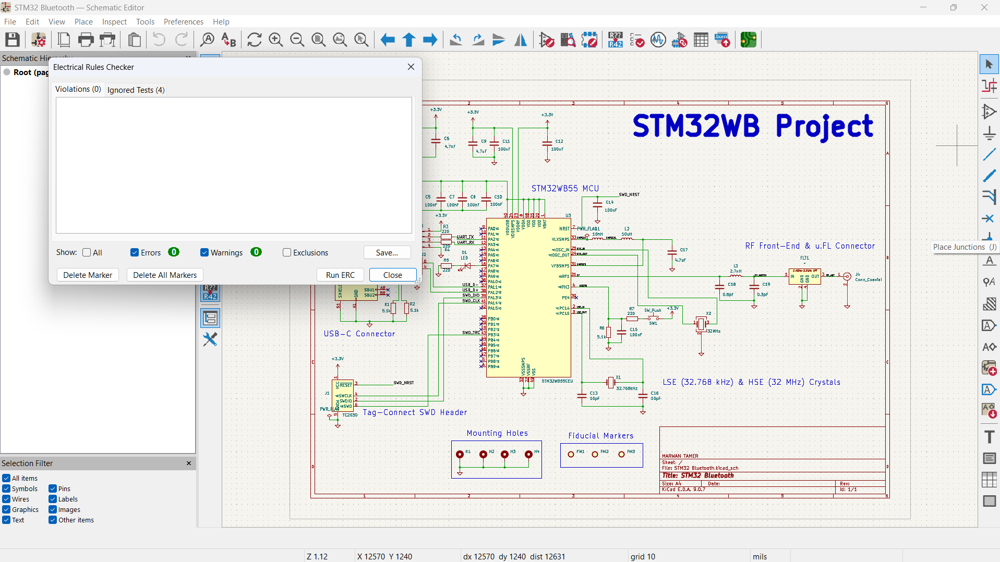
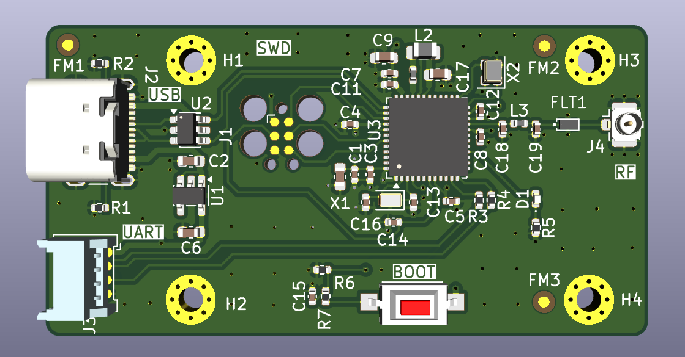
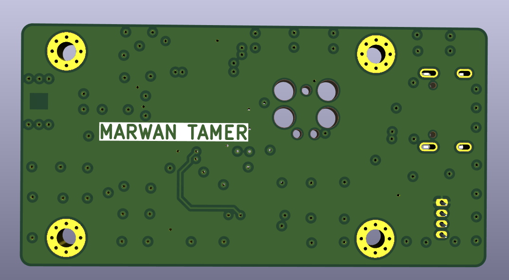

Overview
A 4‑layer STM32WB55‑based Bluetooth Low Energy development board, designed in KiCad by following Phil's Lab tutorial. It includes USB‑C power/data, a UART header, an SWD programming interface via Tag‑Connect TC2030, and an RF front‑end with a u.FL antenna connector. The board is intended as a learning platform; the design is fully verified (DRC/ERC clean) but has not yet been manufactured.
Schematic

The schematic is structured into functional blocks (power, MCU, USB, RF front‑end) to improve readability.
Component Selection
Components were chosen based on the STM32WB55 datasheet and tutorial guidance. The USB‑C connector supplies 5 V which is regulated to 3.3 V via an onboard LDO. All footprints were verified against manufacturer drawings.
PCB Layout


The 4‑layer stack‑up (Signal / GND / Power / Signal) was used. Critical nets (high‑speed USB, RF) were routed with controlled impedance guidelines where appropriate.
DRC / ERC


All design‑rule and electrical‑rule checks passed cleanly.
3D Render


The 3‑D model shows component placement and board thickness.
Manufacturing Files
All manufacturing outputs (Gerbers, drill files, BOM CSV) are available in the repository.
What I Learned
- Structuring a schematic into functional blocks for clarity.
- Layer stack‑up planning for a 4‑layer board (signal / ground / power / signal).
- VIA and fiducial placement for accurate assembly.
- Designing dedicated ground and power planes.
- Routing strategies for RF, high‑speed, and power nets and resolving DRC/ERC violations.